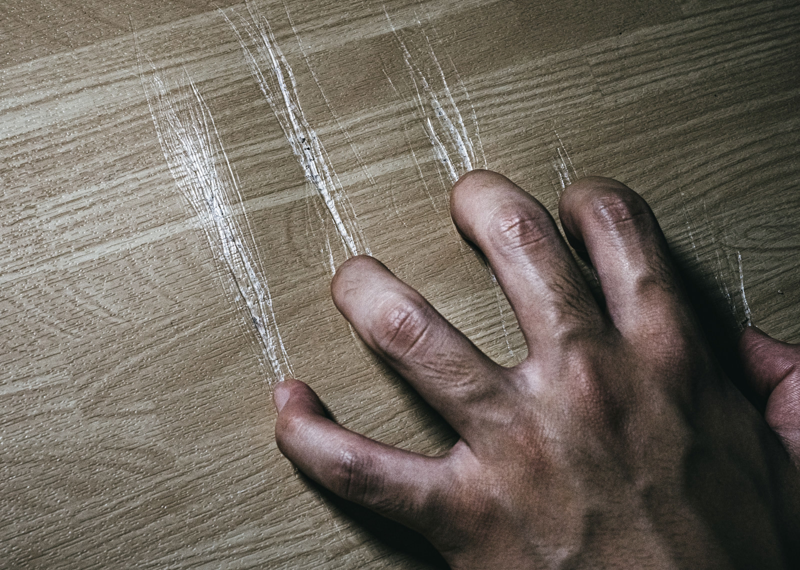

全国順位5位
共感者：85人
周りにいる幽霊の数：923人
全国順位5位
共感者：85人
周りにいる幽霊の数：923人
名城大学S棟、3階の教室。
その窓際の最後列の席には、誰も座ろうとしない。
学生たちの間では、そこを「爪痕の席」と呼んでいる。
机には深く刻まれた無数の引っかき傷──それはただの落書きではなかった。
噂では、そこに長く座った学生は次第に様子がおかしくなり、やがて大学に来られなくなるという。
そして、あの席を最後に使っていたのが──塩釜 太郎だった。
⸻
塩釜 太郎は、名城大学に希望を抱いて入学した。
中学、高校と真面目に勉強を重ねてきた彼にとって、大学は「自由に学べる場所」であり、自分の将来の夢に向けて一歩を踏み出せる場でもあった。
だが、現実は違った。
高校時代からの友人はすぐに新しいグループとつるみ、太郎を置いていった。
仕方なく誘われた派手なグループに身を置くも、彼らは授業をサボり、課題も丸投げ。
「また真面目に出るの？」
「ノートだけLINEで送ってよ〜」
太郎が授業に集中しようとするたびに、軽く笑われた。
「つまんないやつ」と目線を向けられ、輪に入れなくなるのが怖くて、口答えもできなかった。
心の中では叫んでいた。
「なんで俺だけ、頑張っちゃいけないんだよ…」
彼は、毎日のように一番奥の窓際の席に座り、黙ってノートを取り続けた。
その机こそ──爪痕の席だった。
爪痕が刻まれた理由も知らず、彼はそこだけが“安心できる場所”だと思い込むようになった。
次第に、彼は自分の指で机をなぞる癖がついた。
深い傷に指を滑らせながら、講義中でも無意識に、
「…ここにいる」
「…ここだけは俺の場所」
と呟いていたという。
⸻
ある日、彼は突然、大学に姿を見せなくなった。
友人たちが言うには、グループLINEからも急に退室し、連絡が取れなくなったと。
大学の職員が教室を確認したとき、太郎の定位置──あの席の机には、
それまでの何倍もの爪痕が、新しく刻み込まれていた。
⸻
その後、その席に座る学生はたびたび「夢」を見るようになった。
夢の中で、自分とよく似た青年が、黙って机に座っている。
指先は血を流しながら机を削り続け、振り向きもせずこう呟く。
「……真面目にやりたかっただけなのに……」
爪痕の中に染み込んだ声。
誰にも届かなかった悲鳴。
それがいまも、名城大学S棟の教室でこだまし続けている。
⸻
塩釜 太郎の行方は、今も不明。
一緒のグループだった派手な奴らも消息がつかめない。
ただ、一つだけ確かなのは──その机の爪痕が、今も少しずつ増え続けているということだ。